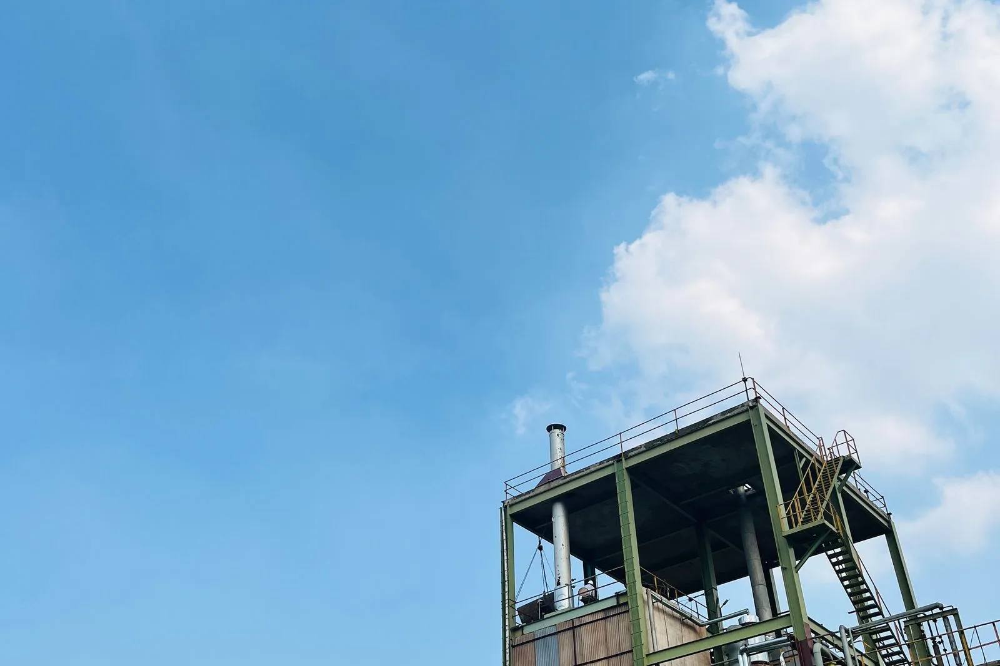
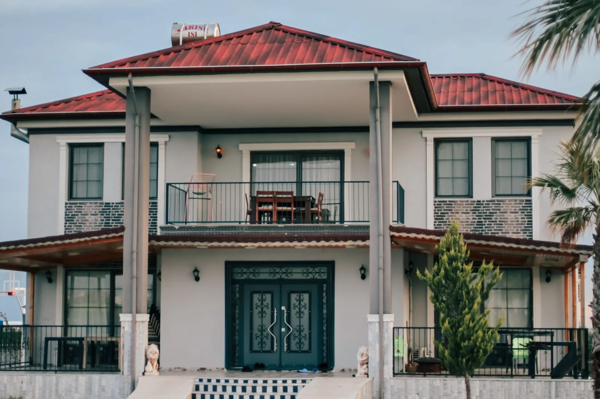

Residential
Ongoing
Residential
Ongoing
Skyline Residence
Vesu, Surat
Prachi Construction Projects builds textile gala units, airjet and waterjet loom sheds, factory buildings and industrial sheds in Surat from our Mota Varachha office. With 10+ years of experience, we handle civil work, RCC, foundations, industrial flooring and turnkey labour & material contracts; call +91 76004 90851.
Clients in Surat
Projects Delivered
Sq.Ft. Constructed
Years in Construction
From homes to factories — complete construction in Surat with labour and materials included.
Residential
Ongoing
Vesu, Surat
 Commercial
Completed
Commercial
Completed
Adajan, Surat

Industrial CompletedSachin GIDC, Surat

Residential CompletedCity Light, Surat
 Commercial
Ongoing
Commercial
Ongoing
Athwa, Surat
 Industrial
Ongoing
Industrial
Ongoing
Pandesara, Surat
Dedicated civil work for textile units — from gala buildings and loom sheds to machine foundations and processing houses.
Complete construction services in Surat — with textile and industrial work first, from the concrete structure to the final finish.
Textile gala units, loom sheds, factories and warehouses built for production use in Surat.
Foundations, walls and full civil work for textile and industrial buildings.
Columns, beams and slabs for factory buildings and machine foundations.
Workers and materials for your textile or industrial unit under one contract.
Homes, villas and residential buildings — built from foundation to final finish.
Clear, written estimates before work starts — for textile units and other buildings.
Help with the layout and design of your project before we start building.
We manage labour, materials and progress — you stay fully informed.
Neat wall finishes and durable industrial flooring for sheds and units.
Shops, offices, IT parks and business spaces built for daily use.
Redesign and rebuild your existing space to look and work better.
Reinforce old or weak structures so they stay strong and safe.
Hotels and guest houses built for comfort, safety and long life.
Clean, safe and compliant spaces for hospitals and pharma units.
Expert advice to make sure your building is designed to be safe.
Roads, drainage and site development for industrial plots in Surat.
Prachi Construction Projects has over 10 years of construction experience in Surat. Today our focus is textile and industrial work — gala units, airjet and waterjet loom sheds, factory buildings and the civil work that supports production.
We handle planning, labour, materials and site management under one contract, so factory owners deal with one team from foundation to handover. Clear estimates and regular updates are part of every job.

A textile unit is a working factory, not just a building. We plan the civil work around your machines, utilities and production schedule, so the shed is ready when the machines arrive.
From foundation and flooring to drainage and handover, one team manages labour and materials for the whole job.
[CONFIRM WITH OWNER: foundation drawing responsibility and load/vibration checks]
Discuss Your UnitTextile and industrial construction work across Surat and nearby industrial belts.
[CONFIRM WITH OWNER: confirmed service areas]
Tell us about your project and get a free consultation with a clear cost estimate — no obligation.
Common questions from factory owners and textile units planning construction in Surat.